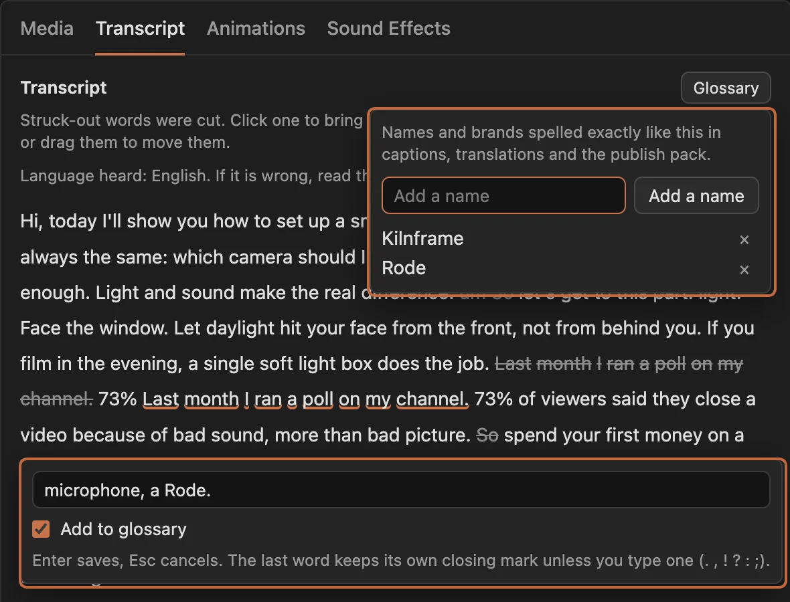
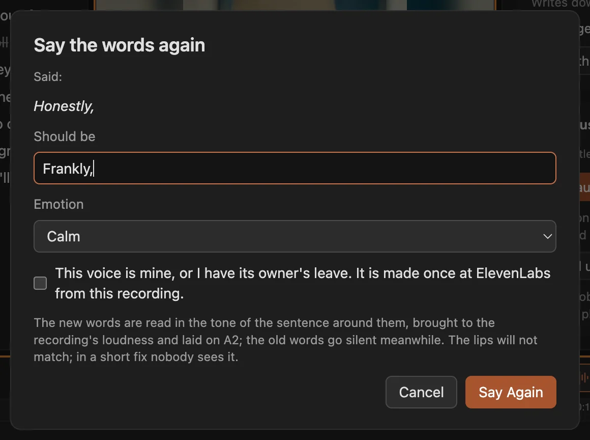

Correct words and say them again
Two different fixes: Correct Words… changes the text when the transcript heard you wrong; Say Again in Voice… changes the sound when you said it wrong.
Correct words
- Select the wordsIn the Transcript, select the word or words and right-click, Correct Words…
- Type them rightEnter saves, Esc cancels. If the same word appears elsewhere, tick Change all … other places.
- Keep the nameTick Add to glossary and it is spelled this way in captions, translations and the publishing texts from now on.
The text changes; the sound stays as it was. A corrected word shows what was heard (Heard: …); Bring Back Heard Words undoes it.

The glossary
Glossary, at the top of the Transcript tab, keeps names and brands spelled exactly as you write them, for captions, translations and the publishing pack. Add a name adds one by hand. With cloud transcription the names also go to the service, so they are heard right.
Say it again in your voice
When you said a word wrong, select it and choose Say Again in Voice…
- Said: shows what you said; type what it Should be.
- Emotion: Automatic (from the sentence), or excited, calm, serious, cheerful, emphatic, whisper.
- Tick that the voice is yours, or that you have its owner's leave, and press Say Again.
The new words are read in the tone of the sentence around them, brought to the recording's loudness and laid on A2; the old words go silent meanwhile. The lips will not match; in a short fix nobody sees it.

This needs an ElevenLabs API key on a paid plan, which allows voice cloning. A voice is made once for each recording in your ElevenLabs account. Settings › AI › Find Extra Voices lists voices made more than once for the same recording, to delete them.